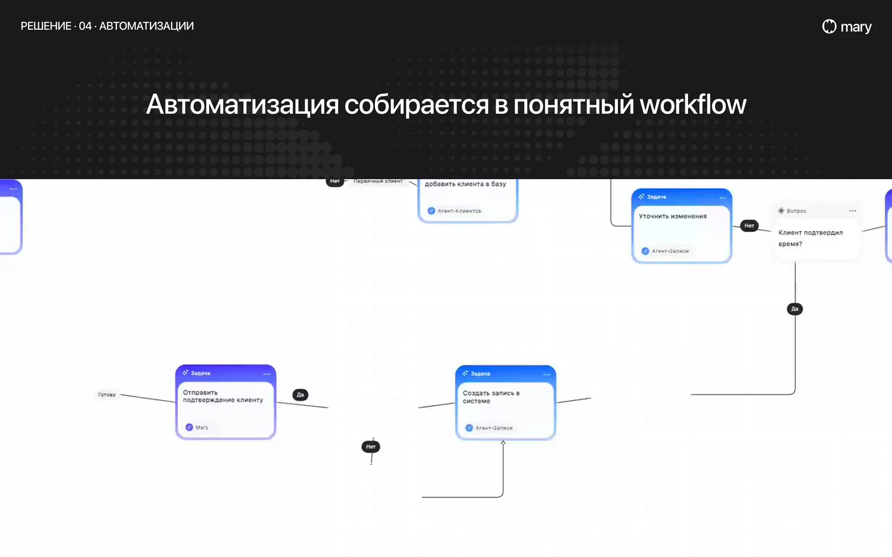
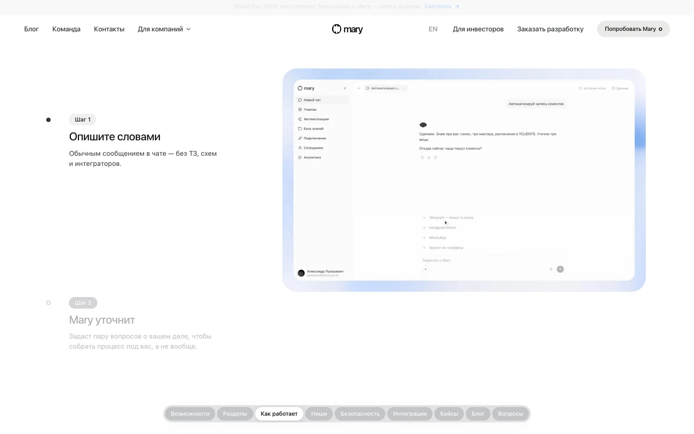
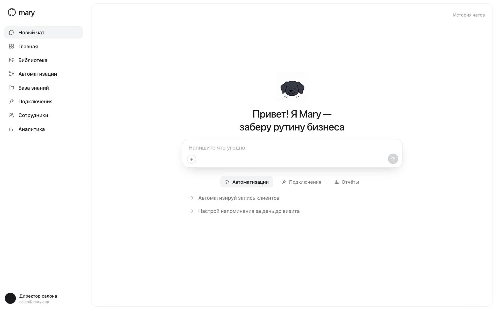

Интерфейс, который начинается с одного чата
Главное решение в продукте: человек не настраивает систему руками. Он просто разговаривает с Mary. В начале в боковом меню есть только «Чат», а разделы компании появляются по ходу разговора, когда Mary узнаёт про отделы, сотрудников и задачи.
Mary сначала расспрашивает (минимум четыре-пять вопросов) и только потом собирает отдел. Автоматизации собираются на канвасе из узлов: «точка входа», «понять запрос», «ответить и уточнить». Пользователь видит, как идёт сборка, и может поправить любой шаг словами.
- ОнбордингДиалог вместо формы. Разделы открываются по ходу разговора
- АвтоматизацииКанвас с узлами, логи сборки, правки словами в том же чате
- СотрудникиОдна ссылка-приглашение, вход через Google, роли повышает директор
- Дизайн-системаПеременные и текстовые стили в Figma, компоненты кодом с живым гайдом для разработчиков. Открыть ↗︎
- ВерсииMVP0 каркас → MVP1 рабочий чат → MVP2 шаблоны сервисов. Версия закрывается событием, а не датой


С ИИ от макета до готового фронта
Я делаю не кликабельные макеты, а интерактивные прототипы, которые уже работают как готовый фронт: настоящий React, настоящие состояния, настоящие данные в полях. Рисую в Figma, собираю дизайн-систему и вместе с Claude Code и Codex превращаю её в рабочий прототип. Видео и визуал делаю в Higgsfield.
Так лучше для тестов: гипотезы и A/B-варианты проверяются на живом интерфейсе, а не на картинках, и сразу видно воронку: где люди уходят, что непонятно, что убрать. И понятнее разработчикам: они получают не макеты, а фронт, к которому остаётся подключить данные. Все компоненты дизайн-системы тоже есть кодом, с живыми примерами, размерами, токенами и правилами «так / не так».
- FigmaЭкраны, компоненты, переменные
- Дизайн-системаКомпоненты кодом с гайдом: анатомия, токены, состояния, код. Открыть ↗︎
- ПрототипЖивой фронт на React через Claude Code и Codex, правки сразу в коде
- ВизуалРолики, мокапы и фото в Higgsfield
- РазработкаЗабирает готовый фронт и подключает бэкенд
- ДанныеA/B-варианты, воронка, правки по поведению пользователей



